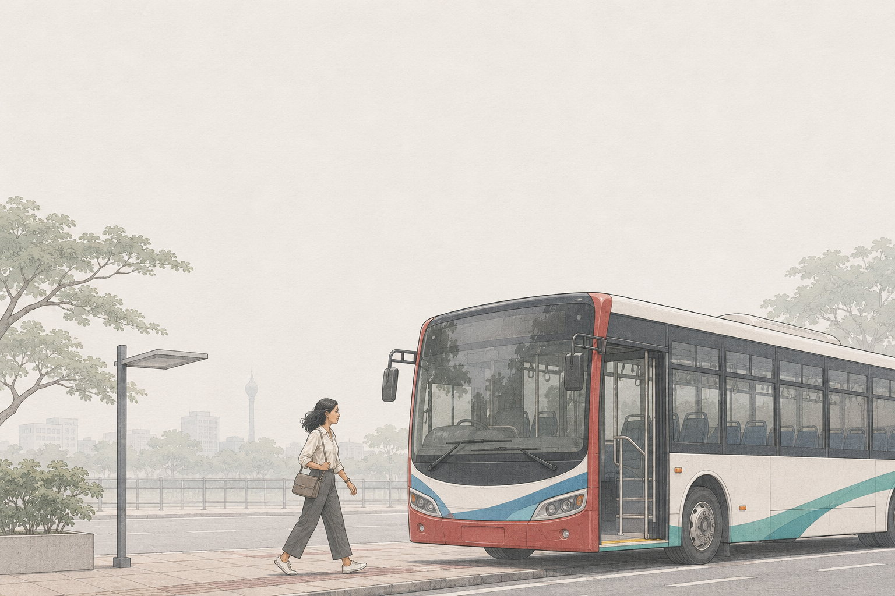
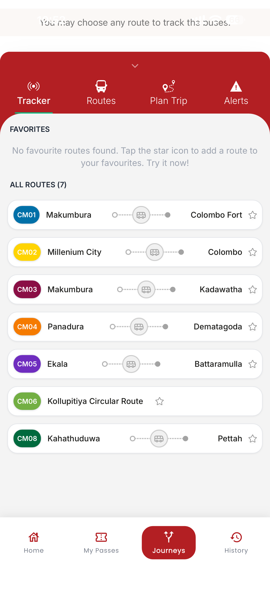
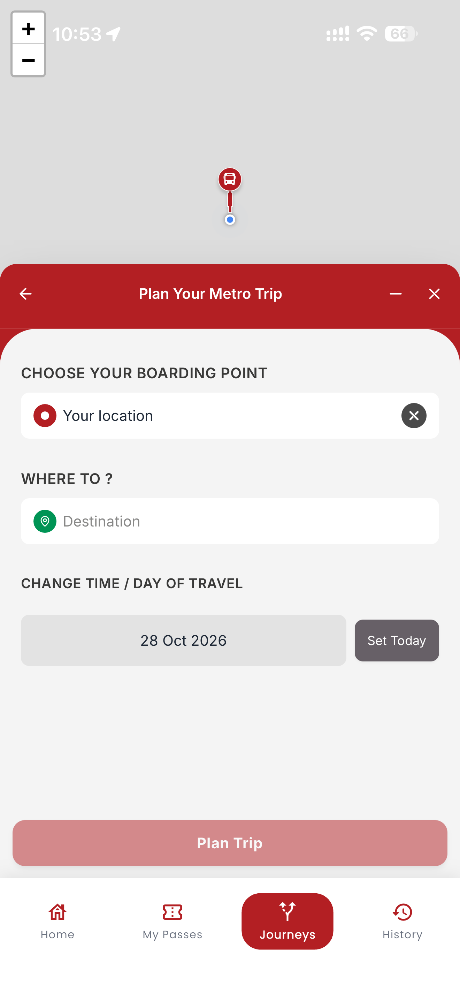
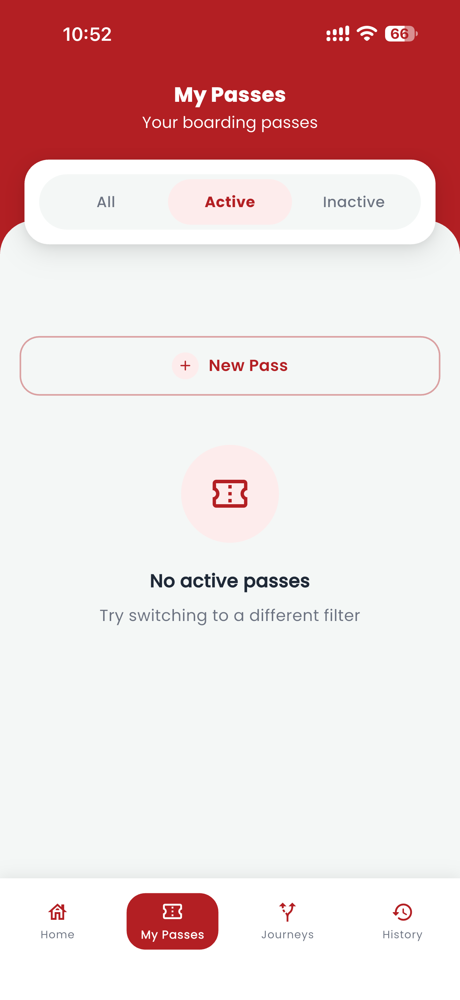
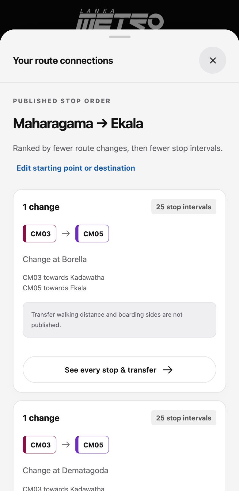
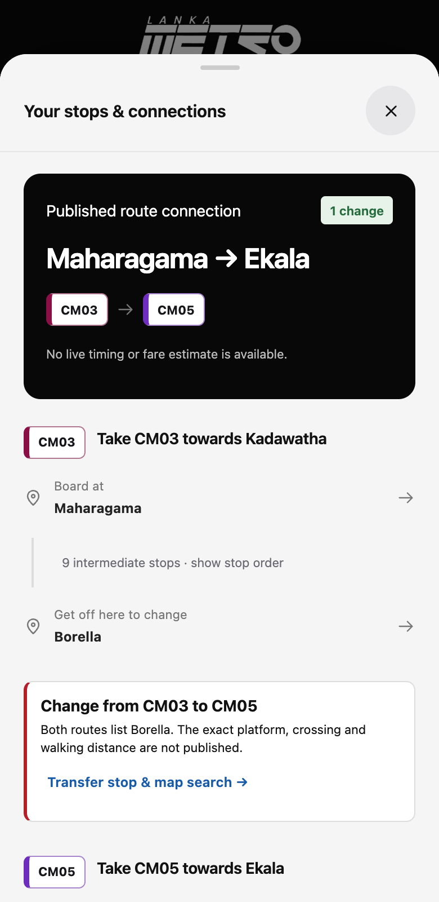
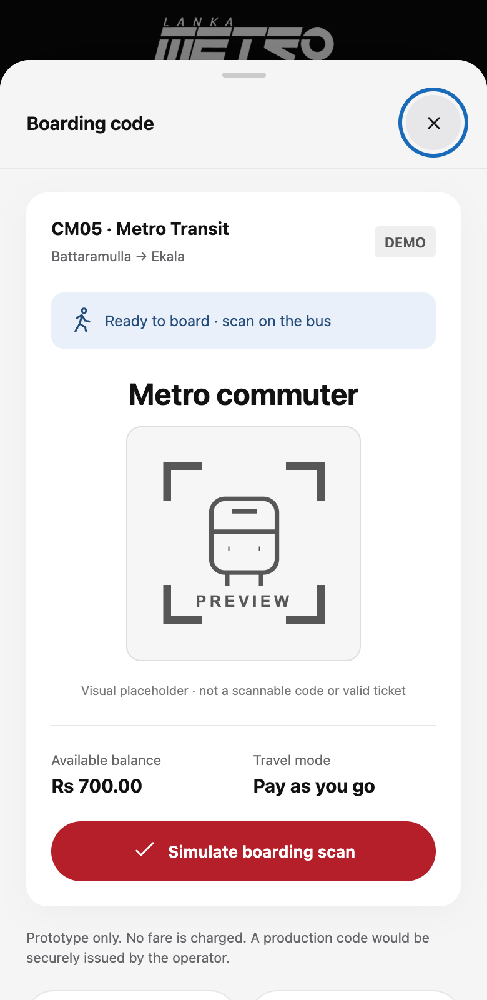
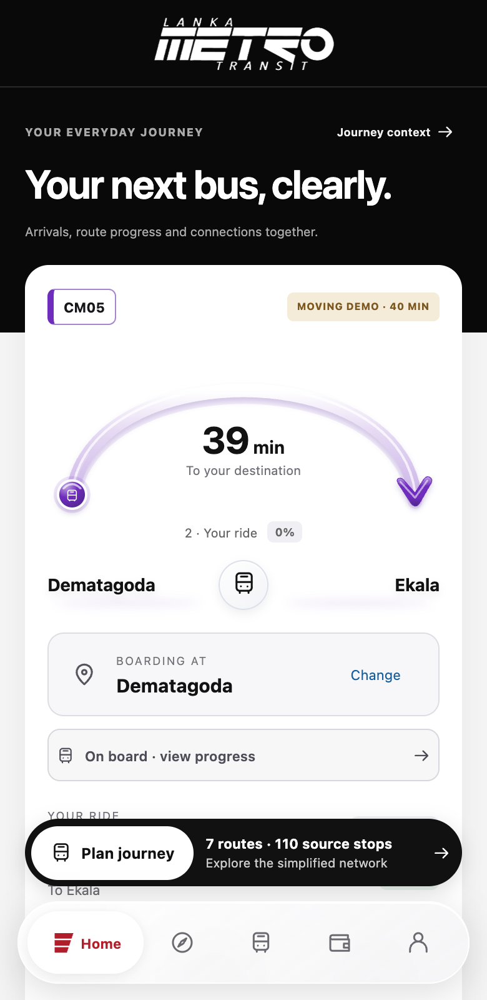
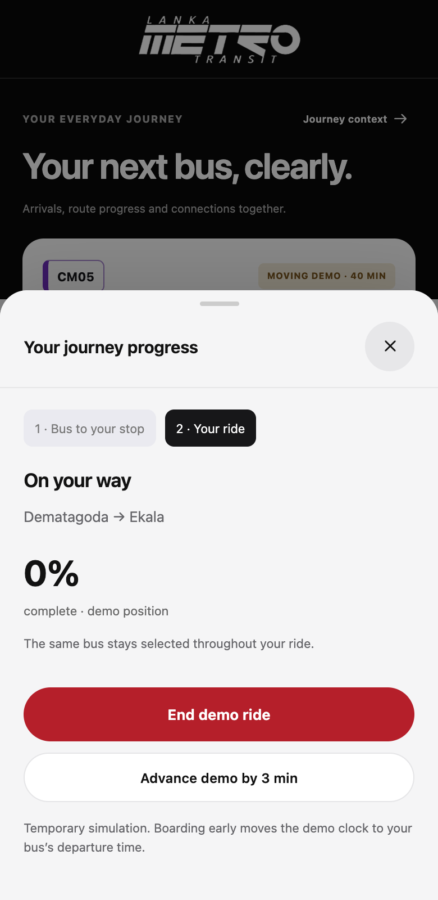

“How do I get there?”
Know the route, direction, boarding point, and what comes next, without having to assemble a journey from separate screens.
 LMT Go
LMT Go
Redesigning LMT Go around the way frequent Metro riders travel.
What if the LMT Go app began with the journey a rider wants to make? I redesigned the existing experience after identifying usability gaps and collecting input from frequent riders in the Metro Transit Facebook group.
The concept brings route planning, the approaching bus, boarding, and journey progress into a more connected experience.



00 / INTRODUCTION
A trip should feel like one connected journey. This redesign explores how the app can make the route, the next bus, and the rider’s next step easier to understand.
The starting point was a review of the existing LMT Go app, alongside input from the Metro Transit Facebook community. The following screens trace the usability gaps and the design response.
01 / THE EXISTING EXPERIENCE
The original experience separates routes, planning, and passes. This walkthrough follows the screens a rider has to piece together before travelling.

A rider needs the route, direction, and boarding point to make the journey.
The rider wants to know how to reach a destination, before thinking about passes or payments.

The rider needs to recognise the correct route.
The route list shows endpoints. Understanding a connection still requires piecing the journey together.

Route selection and journey planning are different screens.
Origin, destination, and date sit in a separate planning view.

An empty pass list does not explain the next journey.
Passes have their own tab, filters, and empty state. The rider is still assembling the trip.
Start with the rider’s destination, then carry the same context through the trip.
02 / THE PROBLEM SPACE
Know the route, direction, boarding point, and what comes next, without having to assemble a journey from separate screens.
Bring planning, bus progress, and boarding into one connected experience. Keep the next useful action close to the journey.
A scenario to connect the product decisions to the everyday ride.
01Before leavingCheck the next bus and decide when to head out.
02At the stopConfirm the direction and the approaching bus.
03Getting onBring up the boarding code when it is needed.
04Along the wayStay with the same journey until the destination.
03 / DESIGN STRATEGY
Start with a destination and make the route connections understandable.
Keep the direction, boarding point, and boarding code in the journey context.
Carry the selected journey forward, from the approaching bus to the ride itself.
The aim is to reduce the effort of understanding a journey. More information helps when it appears at the moment a rider needs it.
04 / CORE USER FLOWS
Follow the phones from left to right. Use the action inside a frame, the step markers, or the arrows to move through each journey.
From the next bus on Home to the stops and connections for the whole trip.
The next ride is the starting point.
Arrival, direction, and the boarding stop share one home screen.
From and To stay together.
A named-stop search makes the journey explicit before choosing a route.

Route changes are visible before committing.
Compare the available route connections and the changes they need.

The origin and destination remain visible.
Follow the route sequence and transfer stops, rather than guessing where two routes meet.
Keep the same route context as the rider gets on and the journey moves forward.
The selected journey stays the same.
The route, direction, and boarding stop remain in view as the bus approaches.

Boarding is part of the journey, not a separate task.
The code sits with the selected route and the available balance.

From bus-to-stop to stop-to-destination.
The same progress view shifts from the approaching bus to the ride itself.

Show where the rider is in the journey.
The ride continues as one connected journey, with its progress available when needed.
The frames show the working concept. Journey times, bus positions, and boarding scans in the prototype are illustrative.
05 / DESIGN DECISIONS
The original home gives the wallet a prominent place. The redesign brings the next bus and route progress forward, while keeping payment one step away.
A list of routes helps people who already know the network. A start-and-destination flow supports a rider who needs to discover how those routes connect.
The approaching bus and the on-board ride are parts of one journey. The progress display changes phase while preserving the rider’s context.
06 / TRY THE PROTOTYPE
The original working redesign, in a mobile simulator. Choose a starting point or explore the app freely.
Independent concept. Operational data and payment flows are illustrative.
Open the app on its own ↗07 / RESEARCH & PROCESS
I reviewed the existing LMT Go app, identified usability gaps, and collected input from the Metro Transit Facebook group: a community of people who use the service frequently.
The Metro Transit Facebook community.
Community input helped frame the redesign around the needs of people who use Metro regularly. It sits alongside a review of the app’s existing screens and flows.
Research input informed the problem framing; the walkthroughs show how the redesign responds to those usability gaps.
Look at the journey across the existing screens.
The supplied screens show route selection, trip planning, passes, and service updates as separate destinations. I used that separation as the starting point for a more connected journey.
Walk through the original experience ↗Make the rider’s next step easier to understand.
How might the app help a rider understand the route, the bus, and the next step, while keeping the journey together from planning to arrival?
The focus is planning, boarding, and orientation during the ride.
Storyboard, mobile screens, and an interactive prototype.
The storyboard connects the interface to four moments of a commute. The working prototype makes route planning, network exploration, boarding, and journey progress available to try.
Explore the working prototype ↗Understanding, confidence, and continuity.
Test whether riders can identify the right direction and boarding point, understand a route connection, and find the boarding code when needed. Compare that task completion with the existing app.
The prototype demonstrates the design direction. No measured usability improvements or live service outcomes are claimed here.